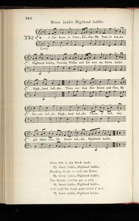
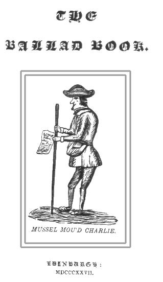
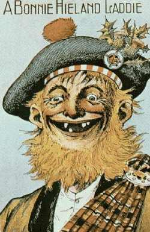

1° I hae been in Crookieden
Je reviens de Crookieden
Bonie Laddie, Highland Laddie
|
The
"True Loyalist" (1779)
includes 2 songs to the same tune with identical structures: 8 line stanzas made up of four 7 syllable lines alternating with a burden
"Bonnie Laddie, Highland Laddie"
or
"Bonnie Lassie, Highland Lassie"
. These are archetypes for two categories (eulogies and amoebean verses) of later Jacobite songs, where the same verses are recombined or rephrased, a third category being Charles Lesly's
"Crookieden-songs"
.
Hogg knows no less than 6 different airs (tunes) suiting these songs. |
Tune - Mélodie
"The Old Highland Laddie"
Published in 1792 in Scots Musical Museum Volume IV N°332 page 342
Sequenced by Christian Souchon

|
To the tune:
The tune is in Rutherford's "Country Dances", 1749, as "The new highland laddie"; it is in Oswald's "Companion", 1754, vi. 1, entitled "The old Highland laddie" as marked by Burns on the MS. of his verses. Source "Complete songs of Robert Burns Online Book" (cf. Links). For a list of other "Whigs in hell" songs, click here. For other "Bonnie Laddie, Highland Laddie" songs, click here. |
A propos de la mélodie:
Cette mélodie figure parmi les "Contredanses" de Rutherford, 1749, où elle est intitulée "The New Highland Laddie". On la trouve aussi sous le titre "The Old Highland Laddie" dans le "Vadémécum" d'Oswald, VI,1, 1754, titre repris par Burns dans son manuscrit Source "Complete songs of Robert Burns Online Book" (cf. Links). Autres chants de "Whigs en enfer" : cliquer ici. Autres chants du type "Bonnie Laddie, Highland Laddie", cliquer ici. |

|
1. I hae been at Crookieden, [1]
Bonnie laddie, Hielan' laddie Wiewing Willie(2) and his men, Bonnie laddie, Hielan' laddie There our foes that burnt and slew, Bonnie laddie, Hielan' laddie There at last they got their due, Bonnie laddie, Hielan' laddie 2. Satan sits in yon black neuk, Bonnie laddie, Hielan' laddie Breaking sticks tae roast the Duke [2], Bonnie laddie, Hielan' laddie The bluidie monster gae a yell, Bonnie laddie, Hielan' laddie Loud the laugh gaed roun' a' Hell, Bonnie laddie, Hielan' laddie (1) "Crooked den"=Hell (evokes a "Culloden" for the Whigs) (2) The Duke of Cumberland |
1. Je reviens de Crookieden [1],
Bonnie laddie, Hielan' laddie Je viens d'y voir Cumberland, Bonnie laddie, Hielan' laddie Après avoir occis et brûlé Bonnie laddie, Hielan' laddie Enfin il a ce qu'il méritait, Bonnie laddie, Hielan' laddie 2. Dans un coin Satan casse du Bonnie laddie, Hielan' laddie Bois sec pour rôtir le Duc, [2] Bonnie laddie, Hielan' laddie Ce monstre sanguinaire a hurlé, Bonnie laddie, Hielan' laddie Et l'enfer a de rire éclaté, Bonnie laddie, Hielan' laddie (Trad. Ch.Souchon(c)2005) (1)"Crookieden" : "la tanière tordue", l'enfer (qui sera le "Culloden" des Whigs) (2) Le Duc de Cumberland |
|
Another version of this song is mentioned by George R. Kinloch's in his "Ballad Book" published in Edinburgh in 1827. As the other songs of the collection, it was written by the Aberdonian ballad singer
Charles Lesly
(1687-1792), also known as "Mussel mou'd Charlie"
According to Kinloch, Lesly was "an itinerant ballad-singer from his youth. Fame, however, speaks of him as a rank and irreclaimable Jacobite, having been OUT in the rebellions of "Fifteen" and "Forty-five;" and as having not only aided the great cause with his sword, but likewise employed his pen in its favour. He is said to have been the author of sundry Jacobite compositions, and especially of that severe philippic on the Duke, commencing, "Will ye go to Crookieden." ..... With respect to the political creed of the subject of this memoir, we can hardly, after all, think him such a determined Jacobite as has been represented. For although his before mentioned phillippic against the commander of the Royal army in "the forty-five" is well enough for a rank Jacobite, yet it cannot be denied that Prince Charlie himself comes in for a pretty severe rub on occasion, as well as the Duke; which shows that our Author was a good deal of an humourist: " 1. Will ye go to Crookieden, Bonny laddie, Highland laddie, There you'll see Charlie and his men, My bonnie Highland laddie. 2. All the whigs will gang to hell, Bonnie laddie, Highland laddie, CHARLIE he'll be there himsell, My bonny Highland laddie. 3. Satan sits in the black nook, A bonnie laddie, Highland laddie, Riving sticks to roast the Duke, My bonnie Highland laddie. |
Charles Lesly's version
 |
Il est question d'une autre version de ce chant dans le "Livre des Ballades" publié par George Kinloch à Edimbourg en 1827. Tout comme les autres chants du recueil, cette version est due à un personnage pittoresque d'Aberdeen, le chanteur
Charles Lesly
(1687-1792), plus connu sous son surnom de "Charlie au bec de moule".
Selon Kinloch, Lesly était "un chanteur itinérant dès le plus jeune âge. Il passe cependant pour avoir été un Jacobite militant et incorrigible, qui prit une part active aux soulèvements de 1715 et 1745. Il combattit pour la grande cause non seulement avec le glaive, mais vraisemblablement avec sa plume. On le dit l'auteur de plusieurs compositions Jacobites, en particulier, de l'acerbe philippique contre le Duc qui commence par " Si tu vas à Crookieden"... Concernant les convictions politiques du sujet de ce mémoire, il nous est difficile, tout bien considéré, de voir en lui le Jacobite forcené qu'on veut nous décrire. En effet, si ladite philippique contre le général commandant l'armée royale en 1746 en fait un Jacobite de premier rang, il n'en reste pas moins, que le Prince Charles lui-même en prend pour son grade le cas échéant, au même titre que le Duc. Ce qui prouve que notre auteur était aussi doté d'une bonne dose d'humour: " 1. Si tu vas à Crookieden, Brave garçon de nos montagnes, Salue Charlie et les siens, Brave garçon de nos montagnes. 2. Les whigs iront en enfer, Brave garçon de nos montagnes, CHARLIE lui aussi, mon cher . Brave garçon de nos montagnes. 3. Satan dans un coin broie du, Brave garçon de nos montagnes, Bois pour y rôtir le Duc. Brave garçon de nos montagnes, Traduction: Ch Souchon (2006) |
|
In G.R. Kinloch's "Ballad Book" we find the following song composed on the occasion of Charles Leslie's death in 1792 at the age of 105 years!
MUSSEL MOU'D CHARLIE. 1. O Dolefu' rings the bell o' Raine, Bonny laddie, Highland laddie ; Charlie ne'er will sing again, My bonny Highland laddie. 2. Grim death has closed his mussel mou', Bonny laddie, Highland laddie ; Be this a warning bell to you, My bonny Highland laddie. 3. He's dead, and shortly will be rotten, Bonnie Laddie, Highland Laddie, But he must never be forgotten, My bonnie Highland Laddie. 4. He'danc'd and sang years five score and five, Bonnie Laddie, Highland Laddie, Few men like him are now alive, My bonnie Highland Laddie. 5. Gae lads and lasses to the fair, Bonnie Laddie, Highland Laddie, For Charlie ne'er will meet you there, My bonnie Highland Laddie. 6. Nor in the streets of Aberdeen, Bonnie Laddie, Highland Laddie, Will his lang spindle shanks be seen, My bonny Highland Laddie. 7. The hardest heart would surely melt, Bonnie Laddie, Highland Laddie, To see his wig, hat, coat, and belt. My bonny Highland Laddie. 8. To see them by a broomstick borne. Bonny Laddie, Highland Laddie, To scare the rooks frae early corn, My bonny Highland Laddie. 9. His bag where ballad books have been, Bonny Laddie, Highland Laddie, In rags hang wagging on a pin, My bonny Highland Laddie. 10. And his lang staff, which lang he wore Bonny Laddie, Highland Laddie. Drive off the dogs frae the kirk door. My bonny Highland Laddie. 11. Had I the power o' Parson Wesley, Bonny laddie, Highland laddie ; I'd preach in praise of Charlie Leslie, My bonny Highland laddie. 12. For troth he was a cantie carle and, Bonny laddie, Highland laddie ; Many a brave ballad made and garland My bonny Highland laddie. 13. And all his garlands, all his ballads, Bonny Laddie, Highland Laddie, All bonny lasses pleased, and all lads. My bonny Highland Laddie. 14. The fame of Charlie wander'd far. Bonny Laddie, Highland Laddie, Through Angus, Buchan, Mearns, and Mar, My bonny Highland Laddie. 15. Strathbogie can and Garioch, tell, Bonny laddie, Highland laddie ; That oft he sent the Whigs to hell, My bonny Highland laddie. 16. And how he went to Crookieden, Bonny laddie, Highland laddie ; To see Prince Charlie's Highlandmen, My bonny Highland laddie. 17. And how for comfort of his life, Bonny laddie, Highland laddie ; In Edinburgh he bought a wife, My bonny Highland laddie. 18. Each Ballad a bawbee him brought. Bonny Laddie, Highland Laddie, And for that sum his wife he bought. My bonny Highland Laddie. 19. Her tocher was not quite worth a plack O, Bonny laddie, Highland laddie ; A farthing's worth of cut tobacco, My bonny Highland laddie. 20. The songs he sang, and many more, Bonnie Laddie, Highland Laddie. And deep and hollow was his roar, My bonny Highland Laddie. 21. Those songs in the lang nights of winter. Bonny Laddie, Highland Laddie, He made, and Chalmers was the printer, My bonny Highland Laddie. 22. O mourn, good master Chalmers, mourn, Bonnie Laddie, Highland Laddie, For Charlie will no more return. My bonny Highland Laddie. 23. Blind Jamie now, and Ross, they say, Bonny Laddie, Highland Laddie, Maun sing your books when he's away. My bonny Highland Laddie. 24. And so farewell, good people all. Bonny Laddie, Highland Laddie, Both old and young, both great and small, My bonny Highland Laddie. 25. Good luck betide you, late and early. Bonny Laddie, Highland Laddie, And may you live as long as Charlie, My bonny Highland Laddie. |
G.S. McQuoid took another version from Peter Buchan's "Wanderings of Prince Charles and Flora McDonald", 1828.
MUSSEL MOU'D CHARLIE. 1. Dolefu' rings the bell o' Rain, Bonny laddie, Highland laddie ; Charlie ne'er will sing again, My bonny Highland laddie. 2. Death has closed his mussel mou', Bonny laddie, Highland laddie ; To be a warning bell to you, My bonny Highland laddie. 10. Never mair hell play sic pranks, Bonny laddie, Highland laddie ; Trindling on his spindle shanks, My bonny Highland laddie. 11. O it wad make a heart to melt, Bonny laddie, Highland laddie ! To see his coat, his hat, and belt, My bonny Highland laddie : 12. Upon a pole where they are borne, Bonny laddie. Highland laddie ; Scaring the rooks frae Cairnie's corn, My bonny Highland laddie. 13. The staff that he had aften wore, Bonny laddie, Highland laddie ; To rung the tykes frae chapel door, My bonny Highland laddie. 3. Had I the power o' parson Wesley, Bonny laddie, Highland laddie ; I would pray for Charlie Leslie, My bonny Highland laddie. 4. 'Deed he was a cantie carlie, Bonny laddie, Highland laddie ; The Episcoples he loved dearlie, My bonny Highland laddie. 5. Buchan and Garioch well can tell, Bonny laddie, Highland laddie ; Sae afts he sent the Whigs to hell, My bonny Highland laddie. 6. And how he went to Crookie den, Bonny laddie, Highland laddie ; To see Prince Charlie and his men, My bonny Highland laddie. 7. To be the comfort o' his life, Bonny laddie, Highland laddie ; In Edinburgh he bought a wife, My bonny Highland laddie. 8. And for her ga'e but ae puir plack, Bonny laddie, Highland laddie ; A farthing in he got o' that, My bonny Highland laddie. 9. When his strength and sangs did fail, Bonny laddie, Highland laddie ; He spake o' witchcraft, ghosts, and spells, My bonny Highland laddie. 14. Death at last has closed his eyes, Bonny laddie, Highland laddie ; An' at Auld Rain entombed he lies, My bonny Highland laddie. |
G.R. Kinloch dans son "Ballad Book" (1827) réédité en 1868 par T.G.Stevenson et
G.S. Samuel McQuoich dans ses "Chants et Ballades Jacobites (1888) publièrent deux versions d'un éloge funèbre de cet "Homère Jacobite".
CHARLIE BEC DE MOULE 1. Le bourdon d'Old Raine est ému, Brave garçon de nos montagnes. Car Charlie ne chantera plus, Brave garçon de nos montagnes. 2. La mort a clos son bec de moule Brave garçon de nos montagnes. Triste présage pour les foules. Brave garçon de nos montagnes. 3. Mort, peut-être, et bientôt pourri Brave garçon de nos montagnes. Mais non pas la proie de'oubli. Brave garçon de nos montagnes. 4. Cent cinq ans de danse et de chant! Brave garçon de nos montagnes, Qui donc pourrait en dire autant? Brave garçon de nos montagnes. 5. De vos fêtes, filles et gars! Brave garçon de nos montagnes, Charlie, c'est sûr, ne sera pas. Brave garçon de nos montagnes. 6. Aberdeen, que seront tes rues, Brave garçon de nos montagnes, Ses longues jambes disparues? Brave garçon de nos montagnes. 7. Le plus endurci pleurerait Brave garçon de nos montagnes, De voir son manteau, son bonnet Brave garçon de nos montagnes. 8. Suspendus au manche à balai Brave garçon de nos montagnes, Eloigner les corbeaux des blés, Brave garçon de nos montagnes; 9. Son sac à mettre ses ballades Brave garçon de nos montagnes, Au crochet, en capilotade. Brave garçon de nos montagnes, 10. Et son long bâton légendaire, Brave garçon de nos montagnes, Chasser les chiens des cimetières Brave garçon de nos montagnes. 11. Si j'étais le curé Wesley Brave garçon de nos montagnes, Je prierais pour Charlie Lesley. Brave garçon de nos montagnes. 12. Un garçon vraiment plein d'entrain Brave garçon de nos montagnes, Qui commit de hardis refrains. Brave garçon de nos montagnes. 13. Et ses guirlandes, ses ballades Brave garçon de nos montagnes, Qui guérissaient les plus malades Brave garçon de nos montagnes. 14. Il était connu même au loin Brave garçon de nos montagnes, En Angus, Mearns, Mar et Buchan, Brave garçon de nos montagnes. 15. Dans tout Garioch et Strathbogie Brave garçon de nos montagnes, Il maudissait la Whiguerie Brave garçon de nos montagnes. 16. A Crookieden il vient encor, Brave garçon de nos montagnes, Visiter Charles et consort, Brave garçon de nos montagnes. 17. Pour avoir une vie douillette Brave garçon de nos montagnes, Il fit d'une épouse l'emplette, Brave garçon de nos montagnes. 18. La ballade, un demi-penny: Brave garçon de nos montagnes, D'une épouse ce fut le prix. Brave garçon de nos montagnes. 19. Sa dot en valait quatre au plus Brave garçon de nos montagnes, Du tabac à priser en sus. Brave garçon de nos montagnes. 20. Chantant ses chants et ceux d'autrui Brave garçon de nos montagnes, Sa voix basse semblait un cri. Brave garçon de nos montagnes. 21. Passant l'hiver à composer Brave garçon de nos montagnes. Des chants que Chalmers imprimait Brave garçon de nos montagnes. 22. O pleure, Chalmers, pleure donc! Brave garçon de nos montagnes. Ce fut sa dernière chanson. Brave garçon de nos montagnes. 23. Jack l'Aveugle et Ross n'ont plus rien, Brave garçon de nos montagnes. Pour l'imiter, que tes bouquins. Brave garçon de nos montagnes. 24. Adieu donc, vous tous, bonnes gens, Brave garçon de nos montagnes. Vieux et jeunes, petits et grands! Brave garçon de nos montagnes. 25. Que la chance à tous vous sourie, Brave garçon de nos montagnes. Vivez aussi vieux que Charlie! Brave garçon de nos montagnes. (Trad. Christian Souchon (c) 2010) |
2° Geordie sits in Charlie's Chair
Geordie a pris le siège de Charlie
Alternative version of the preceding song
Tune - Mélodie
(see
"McDonald's Gathering"
)
as stated in
Hogg's "Jacobite Relics" 2nd Series
N°105 p.202 (published in 1821)
|
To this song Hogg remarks:
"Is highly popular, and sung in many different ways. It appears, from the numberless copies I have got, that the song had been very short at first, and that parts had been added, now and then, by different hands, until some of the most common editions appear rather like a medley than a regular ballad. This set may be received as the most perfect, all the good verses being in it, and a kind of uniformity throughout. I have been told the song was originally composed by an itinerant ballad-singer, a man of great renown in that profession, ycleped " mussel-mou'ed Charlie;" and that while in his possession, it consisted only of four full stanzas, the two first, the first halves of the third and sixth, and the last verse, was made up of the last four lines of the sixth, and the following four: 2 bis. But a' the whigs maun gang to hell, Bonnie laddie, Highland laddie ; That sang Charlie made himsel' , Bonnie laddie, Highland laddie. A very good and judicious hint, as Charles, save in that instance, had only sung songs made by other people." If Hogg's version is correct, Kinloch's remark about Charles Lesly's alleged moderate Jacobitism and sense of humour does not mean. |
A propos de ce chant Hogg remarque:
"Ce chant est très connu et il en existe de nombreuses variantes. Je déduis des innombrables exemplaires qui me sont parvenus, qu'il était court à l'origine, mais qu'au fil du temps, des couplets ont été ajoutés par toutes sortes de rimeurs, si bien que la plupart des leçons les plus communément répandues ressemblent plus à des pots-pourris qu'à de vraies ballades. Le texte qui suit peut être considéré comme l'un des plus parfaits, car il renferme tous les meilleurs couplets et présente une certaine cohérence tout du long. On m'a dit qu'il avait été composé à l'origine par un chanteur itinérant, célèbre dans sa corporation, surnommé "Charles Bec de Moule" et qu'il n'avait composé que 4 couplets: les 2 premiers, la première moitié du 3ème et du 6ème, le dernier couplet étant constitué des 4 dernières lignes du 6ème couplet auxquelles s'ajoutaient les suivantes: 2 bis. Tous les Whigs iront en enfer, Brave garçon de nos montagnes, Ce chant est de Charlie lui-même. Brave garçon de nos montagnes. Une indication pertinente, dans la mesure où l'on voit toujours Charles (Lesly), sauf dans le cas présent, chanter des chansons faites par d'autres que lui." Si c'est la version de Hogg qui est exacte, la remarque de Kinloch concernant le Jacobitisme modéré et l'humour qu'il prête à Charles Lesly perd beaucoup de son sens. |
|
GEORDIE SITS IN CHARLIE'S CHAIR
1. Geordie sits in Charlie's chair, Bonny laddie, Highland laddie ; Deil cock him gin he sit there, My bonny laddie, Highland laddie ! Charlie yet shall mount the throne, Bonny laddie, Highland laddie; Weel ye ken it is his own, My bonny laddie, Highland laddie. 2. Weary fa' the Lawland loon, (William of Orange) Bonny laddie, Highland laddie, Wha took frae him the British crown, My bonny laddie, Highland laddie. But weel's me on the kilted clans, Bonny laddie, Highland laddie, That fought for him at Prestonpans, My bonny laddie, Highland laddie. 3. Ken ye the news I hae to tell, Bonny laddie, Highland laddie ? Cumberland's awa to hell, My bonny laddie, Highland laddie. When he came to the Stygian shore, Bonny laddie, Highland laddie, The deil himsel wi' fright did roar, My bonny laddie, Highland laddie 4. Then Charon grim came out to him, Bonny laddie, Highland laddie; " Ye're welcome here, ye devil's limb!" My bonny laddie, Highland laddie. They pat on him a philabeg, Bonny laddie, Highland laddie, And in his doup they ca'd a peg, My bonny laddie, Highland laddie. 5. How he did skip and he did roar, Bonny laddie, Highland laddie! The deils ne'er saw sic sport before, My bonny laddie, Highland laddie. They took him neist to Satan's ha', Bonny laddie, Highland laddie, To lilt it wi' his grandpapa, My bonny laddie, Highland laddie. 6. The deil sat girnin in the neuk, Bonny laddie, Highland laddie, Riving sticks to roast the duke, My bonny laddie, Highland laddie. They pat him neist upon a spit, Bonny laddie, Highland laddie, And roasted him baith head and feet, My bonny laddie, Highland laddie. 7. Wi' scalding brunstane and wi' fat, Bonny laddie, Highland laddie, They flamm'd his carcass weel wi' that, My bonny laddie, Highland laddie. They ate him up baith stoop and roop, Bonny laddie, Highland laddie; And that's the gate they serv'd the duke, My bonny laddie, Highland laddie. |
GEORDIE A PRIS LE SIEGE DE CHARLIE
1. Geordie a pris le siège de Charlie Brave garçon de nos montagnes, Satan, depuis, a l'œil sur lui. Brave garçon de nos montagnes, Et Charles aura son trône encore Brave garçon de nos montagnes, Il est à lui, nul ne l'ignore. Brave garçon de nos montagnes, 2. Le Hollandais, de consomption (Guillaume d'Orange) Brave garçon de nos montagnes, Est mort, fauteur d'usurpation. Brave garçon de nos montagnes, J'approuve les clans en tartan Brave garçon de nos montagnes, Les combattants de Prestonpans. Brave garçon de nos montagnes, 3. Savez-vous ce que l'on m'apprend? Brave garçon de nos montagnes, Il est en enfer, Cumberland. Brave garçon de nos montagnes, Quand il arriva près du Styx, Brave garçon de nos montagnes, Le diable a frémi comme dix. Brave garçon de nos montagnes, 4. Alors vint Caron, le méchant: Brave garçon de nos montagnes, "Bienvenue, suppôt de Satan!" Brave garçon de nos montagnes, Ils lui mirent un philabeg (un kilt) Brave garçon de nos montagnes, Et un piquet dans le derrière. Brave garçon de nos montagnes, 5. Comme il bondissait! Que de cris! Brave garçon de nos montagnes, Les diables n'ont jamais tant ri. Brave garçon de nos montagnes, Puis ils l'ont conduit chez Satan, Brave garçon de nos montagnes, Son grand-père a repris le chant. Brave garçon de nos montagnes, 6. Satan dans son coin ricanait, Brave garçon de nos montagnes, Coupant du bois pour son bûcher. Brave garçon de nos montagnes, Sur une broche on l'a fixé Brave garçon de nos montagnes, Pour rôtir de la tête aux pieds. Brave garçon de nos montagnes, 7. Enduite de soufre et de graisse, Brave garçon de nos montagnes, Ils ont fait flamber sa carcasse Brave garçon de nos montagnes, Ils l'ont dévorée, ces goulus: Brave garçon de nos montagnes, Voilà comment on cuit un duc. Brave garçon de nos montagnes, (Trad. Christian Souchon(c)2010) |

|
Other songs with the burden "Bonnie laddie, Highland laddie", will be found on the
homonymous page
.
This phrase, endlessly repeated in the Lowland Scots songs, led to parodies like this 19th century postcard, titled "Jockular", clearly implying in the Gael drunkenness and/or stupidity... |
On trouvera d'autres chants comportant l'antienne "Bonny laddy, Highland laddy" à la
page du même nom
.
Ces mots, répétés à l'infini dans les chants en dialecte des Basses Terres, ont conduit à des parodies comme cette carte postale du 19ème siècle, intitulée "Jockular", où le Gaël est présenté comme un ivrogne et/ou un imbécile...(Jock= Ecossais, en général, jocular=humoristique) |